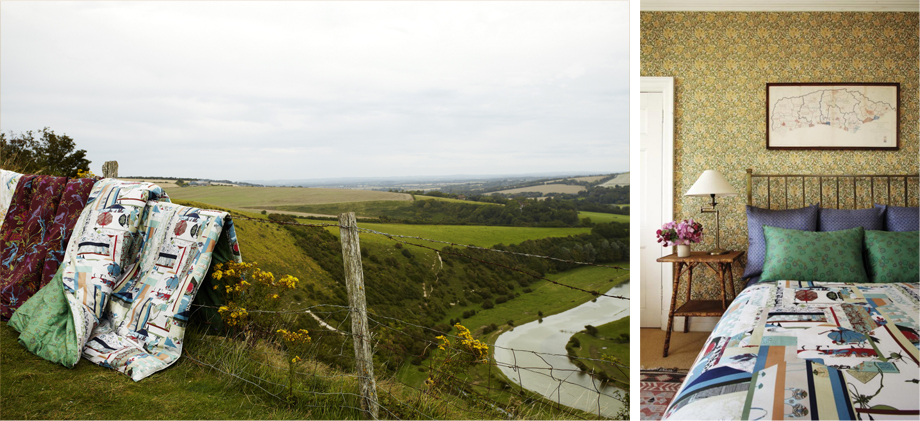

Premium bedding brand bogg, created in collaboration with MONO collection director Chang Eung-Bok, went to England to get a photo shoot for F/W new collection.
Since launching with explosive attention in spring of 2011, bogg has completed its unique style by presenting innovative new patchwork pattern each season. In this autumn, ¡®English Garden,¡¯ applying hexagonal piece linking pattern, and ¡®Sweet Blossom,¡¯ applying ggotsin-piece linking pattern, which uses ggotsin (flower shoes) as motif - one of the most beloved patterns.
Beloved for its unique patchwork pattern, bogg's autumn collection English Garden' shows patchwork of various patterns that shows history of MONO collection inside the hexagonal module, which is linked to all direction. On the whole, it seems that calm stripe patterns meet hexagonal module. So the collection has MONO collection's unique pattern, but at the same time gives extremely modern feeling. Traditional motifs hiding in geometric patterns on the first sight and faint rose pink color & lyrical twilight blue color give us feelings of elegance, modern, and even Korean style coloring in the bedroom in autumn.
Ggotsin motif, one of many patterns applied to bogg bedding, is one of the most beloved patterns by bogg bedding aficionados. This ggotsin is transformed into the whole new ggotsin-piece linking pattern by new patchwork method, and applied to ¡®Sweet Blossom¡¯ collection in this autumn. Ggotsin motif with faint pink tone and color blocking by strong red & green will give the bedroom a strong characteristic.
The reason why this autumn collection looks more special is that photo shooting took place in a mansion of a noble and lovely landscape of Louise, England. In the region, where bogg shooting team visited, came the complete autumn. Wheat fields turned gold, where harvest had already started, and hills overlooking Louise embraced the lyrical autumn wind. Bogg bedding arranged on the hills and fields full of autumn meets the golden autumn sunshine and lyrical wind, delivering the charm of England.
The next photo shoot took place at Mrs. Renton¡¯s mansion filed with tradition. The photo shooting at the mansion with traditional atmosphere of England was the moment when bogg's appeal has shined. In the sun-shining master bedroom and English-style bedroom with William Morrison wall paper, and guest bedroom with slight oriental feeling, bogg bedding conveyed Korean and exotic mood of Europe, modern and lovely & feminine atmosphere at the same time.
Also, novel shooting at the garden and stable gave bogg bedding a chance to show another allure with distinctive direction, going beyond the photo shooting style of existing bedding brand. Bogg bedding will surely bring European mood to an elegant noble mansion as well as our bedroom.
Bogg¡¯s 2012 autumn collection made another progress. Bogg has always deeply considered which material to use because the bedding directly contacts with skin. After through consideration - it should be natural material, and have better feeling, visual effect, and endurance - bogg decided to use Supima cotton. It is premium cotton produced only 3% among U.S. cotton. It is a Pima cotton brand guaranteed by Supima Association in the U.S. after the association selects excellent, super-long Pima cotton over 35mm in length gron in the South Western U.S. Pima cotton fiber is fine and long, and with stable intensity and elasticity, it is superior to ordinary cotton in terms of gloss like silk and soft feeling. Especially, it has far fewer nags than ordinary cotton/wool with dense texture, and dyeing properties are very good so color rendering is clear. Also, it is durable against a lot of washing. Supima cotton - called cotton beyond cotton, being recognized its high quality - with bogg brand, which seeks true premium, will elevate the elegance of the bedroom.
The bedding is more important than any other furniture in determining the mood of the bedroom. Premium bedding brand bogg's 2012 F/W new collection is enough to change the mood of the bedroom easily and surely with new material and sensible design. This autumn, please enjoy mystic, feminine, or modern autumn sensibility with bogg bedding.
|